本ルールは、構成された値に基づいて最小座面積の条件をチェックします。
座面積（Bearing area）とは、締結される部品に対してねじ頭部が直接当接して荷重を受け持つ面積を指します。プレート材質がボルト材質より弱い場合、座面部で破損が発生します。ボルトが穴へ引き抜け（プルスルー）ることを防ぎ、締結部の下により大きい座面を確保するため、ワッシャの使用を推奨します。
本ルールは以下の条件をチェックします：
座面積 - ボルト
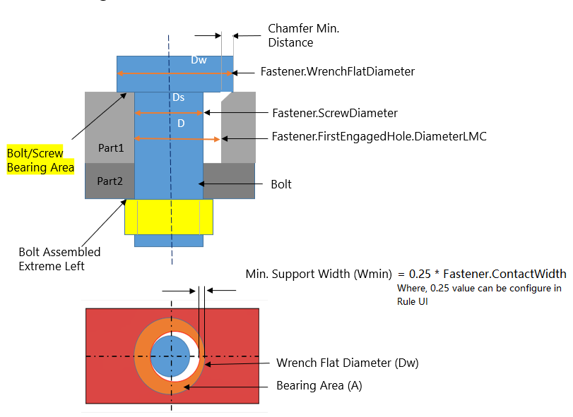
座面積 - ナット
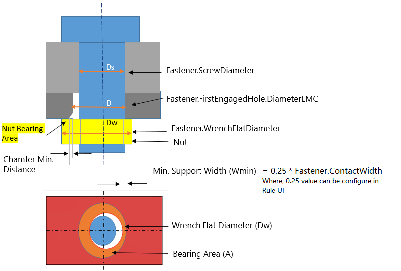
ボルトの座面積：面取りなし
|
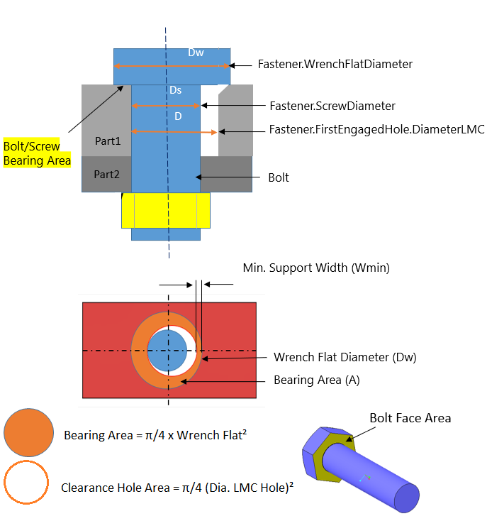 |
推奨値： Fastener.FirstEngagedComp.Material = STEEL Fastener.WrenchFlatDiameter (Dw) = 0.562 inch Fastener.MinSupportWidth (Wmin) = 0.066 inch Fastener.ContactWidth (Wc) = 0.159 inch Fastener.BearingArea (A) = 0.146 inch² Fastener.Name = BOLT_1.PRT(52) Fastener.FirstEngagedComp.Name = TOP_PLATE.PRT(43) Fastener.ScrewDiameter (Ds) = 0.375 inch Fastener.FirstEngagedHole.DiameterLMC (D) = 0.403 inch
座面積 (A)： Actual Value = 0.146 inch² Recommended Value >= 2.0 inch²
注記:
|
式：
Fastener.ContactWidth (Wc) = レンチ径 – 穴径（LMC）
= (Dw - D)
= 0.562 – 0.403
= 0.159 inch
Fastener.MinSupportWidth (Wmin) = 0.5 x（レンチ径 + ねじ径）– 穴径（LMC）
= 0.5 x (Dw + Ds) - D
= 0.5 x (0.562 + 0.375) - 0.403
= 0.066 inch
最小座面積 (A) = フェース面積 + π/4（ねじ径）² - π/4（穴径（LMC））²
= Face area + π/4 (Ds)² - π/4 (D)²
= 0.1635 - π/4 x ((0.403)² - 0.375²)
= 0.146 inch²
ボルトの座面積：面取りあり
|
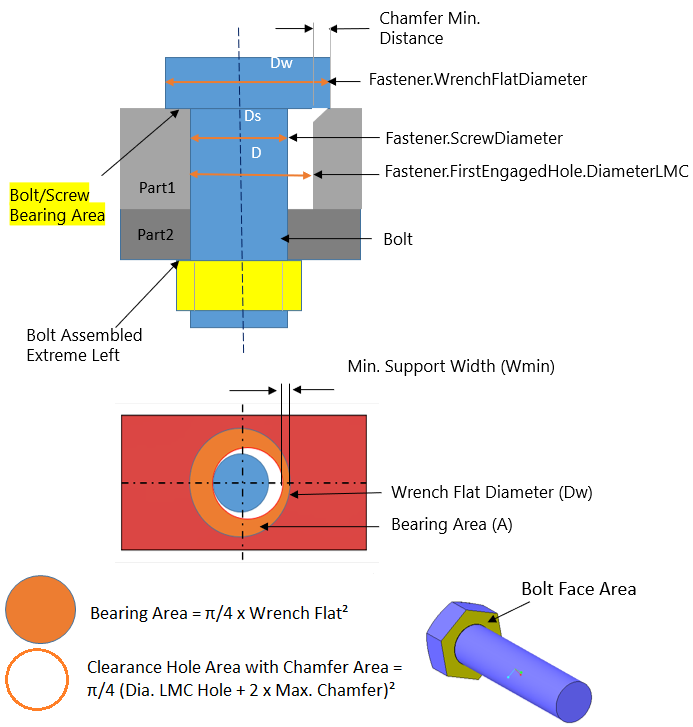 |
推奨事項: Fastener.FirstEngagedComp.Material = STEEL Fastener.WrenchFlatDiameter (Dw) = 0.562 inch Fastener.MinSupportWidth (Wmin) = 0.016 inch Fastener.ContactWidth (Wc) = 0.059 inch Fastener.BearingArea (A) = 0.075 inch² Fastener.Name = BOLT_1.PRT(52) Fastener.FirstEngagedComp.Name = TOP_PLATE.PRT(43) Fastener.ScrewDiameter (Ds) = 0.375 inch Fastener.FirstEngagedHole.DiameterLMC (D) = 0.403 inch
ベアリング面積 (A): 実際の値 = 0.075 inch² 推奨値 >= 2.0 inch²
注記:
|
計算式:
Fastener.ContactWidth (Wc) = 二面幅 − 穴径（LMC） − 2 × 最大面取り
= Dw − D − 2 × 最大面取り
= 0.562 − 0.403 − 2 × 0.05
= 0.059 inch
Fastener.MinSupportWidth (Wmin) = 0.5 ×（二面幅 + ねじ径） − 穴径（LMC） − 最大面取り
= 0.5 × (Dw + Ds) − D − 最大面取り
= 0.5 × (0.562 + 0.375) − 0.403 − 0.05
= 0.016 inch
最小ベアリング面積 (A) = 接触面積 + π/4（ねじ径）2 − π/4（穴径（LMC） + 2 × 最大面取り）2
= 接触面積 + π/4（Ds）2 − π/4（D + 2 × 最大面取り）2
= 0.075 inch²
ナットのベアリング面積: 面取りなし
|
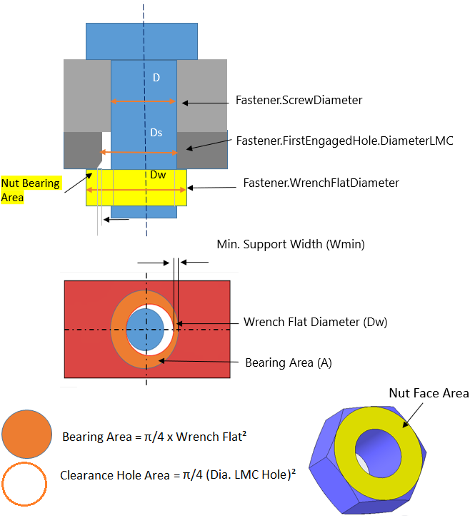 |
推奨事項: Fastener.FirstEngagedComp.Material = STEEL Fastener.WrenchFlatDiameter (Dw) = 0.562 inch Fastener.MinSupportWidth (Wmin) = 0.016 inch Fastener.ContactWidth (Wc) = 0.159 inch Fastener.BearingArea (A) = 0.121 inch² Fastener.Name = NUT_1.PRT(55) Fastener.FirstEngagedComp.Name = BOTTOM_PLATE.PRT(40) Fastener.ScrewDiameter (Ds) = 0.312 inch Fastener.FirstEngagedHole.DiameterLMC (D) = 0.403 inch
座面面積 (A): 実際の値 = 0.121 inch² 推奨値 >= 2.0 inch²
注記:
|
数式:
Fastener.ContactWidth (Wc) = レンチ径 – 穴径（LMC）
= (Dw - D)
= 0.562 – 0.403
= 0.159 inch
Fastener.MinSupportWidth (Wmin) = 0.5 x（レンチ径 + ねじ径）– 穴径（LMC）
= 0.5 x (Dw + Ds) - D
= 0.5 x (0.562 + 0.375) - 0.403
= 0.066 inch
最小座面面積 (A) = 座面の面積 + π/4（ねじ径）2 - π/4（穴径（LMC））2
= 座面の面積 + π/4 (Ds)2 - π/4 (D)2
= 0.121 inch2
ボルトの座面面積: 面取りなしのスロット
|
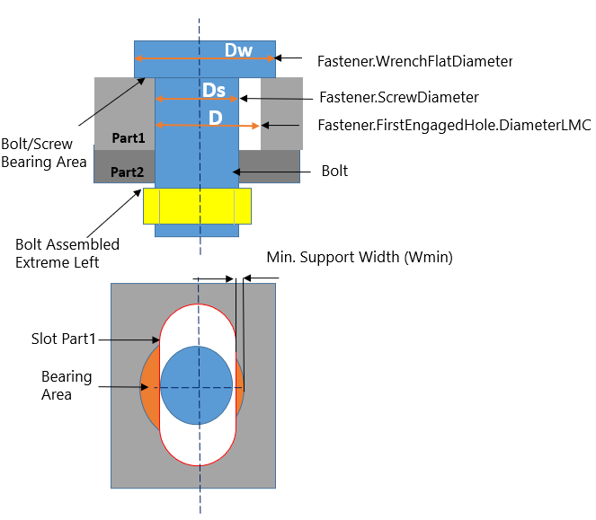 |
推奨事項: Fastener.FirstEngagedComp.Material = STEEL（鋼） Fastener.WrenchFlatDiameter (Dw) = 0.562 インチ Fastener.MinSupportWidth (Wmin) = 0.035 インチ Fastener.ContactWidth (Wc) = 0.129 インチ Fastener.BearingArea (A) = 0.049 インチ² Fastener.Name = HEX_8.PRT(184) Fastener.FirstEngagedComp.Name = SLOT_PLATE_1.PRT(45) Fastener.ScrewDiameter (Ds) = 0.375 インチ Fastener.FirstEngagedHole.DiameterLMC (D) = 0.433 インチ
面圧受け面積（A）: 実測値 = 0.049 インチ² 推奨値 >= 100.0 インチ²
注記:
|
計算式:
Fastener.ContactWidth (Wc) = レンチ幅径 − 穴径（LMC）
= (Dw - D)
= 0.562 − 0.433
= 0.129 インチ
Fastener.MinSupportWidth (Wmin) = 0.5 ×（レンチ幅径 + ねじ径）− 穴径（LMC）
= 0.5 × (Dw + Ds) - D
= 0.5 × (0.562 + 0.375) - 0.433
= 0.035 インチ
アルファ（α） = acos ((D/2.0) / Dw/2)
= acos (0.433/2)/0.281
= 0.6921 ラジアン
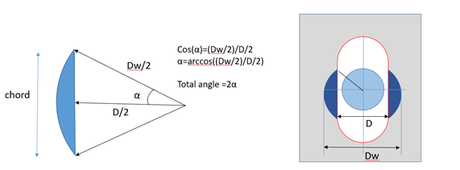
面圧受け面積（A） = (Dw/2)2 × (2 × α − sin (2 × α)) + 追加される実効面積
= 0.078961 x (2 x 0.06921 - 0.9826) + 0.0170
= 0.04871 inch2
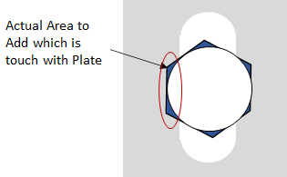
ボルトの座面面積：面取り付き長穴
|
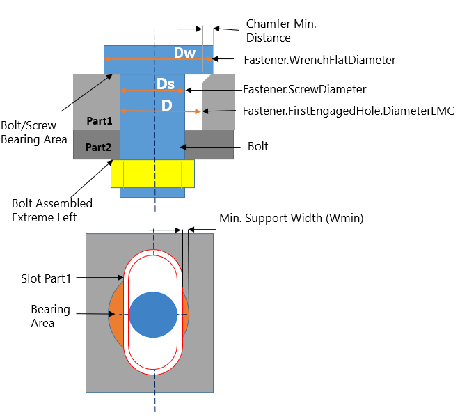 |
推奨事項： Fastener.FirstEngagedComp.Material = STEEL Fastener.WrenchFlatDiameter (Dw) = 0.562 inch Fastener.MinSupportWidth (Wmin) = 0.005 inch Fastener.ContactWidth (Wc) = 0.049 inch Fastener.BearingArea (A) = 0.025 inch² Fastener.Name = HEX_8.PRT(185) Fastener.FirstEngagedComp.Name = SLOT_PLATE_1.PRT(45) Fastener.ScrewDiameter (Ds) = 0.375 inch Fastener.FirstEngagedHole.DiameterLMC (D) = 0.413 inch
Min Support Width (Wmin): Actual Value = 0.005 inch Recommended Value > 0.012 inch
Bearing Area (A): Actual Value = 0.024 inch² Recommended Value >= 100.0 inch² 注記:
|
式:
Fastener.ContactWidth (Wc) = レンチ径 – 穴径 LMC - 2 x 最大面取り
= Dw - D - 2 x 最大面取り
= 0.562 – 0.413 - 2 x 0.05
= 0.049 inch
Fastener.MinSupportWidth (Wmin) = 0.5 x (レンチ径 + ねじ径) – 穴径 LMC - 最大面取り
= 0.5 x (Dw + Ds) - D - 最大面取り
= 0.5 x (0.562 + 0.375) - 0.413 - 0.05
= 0.005 inch
Alpha (α) = acos [(D + Wc/2.0) / Dw/2]
= acos [(0.513/2.0)/0.281]
= 0.4209 rad
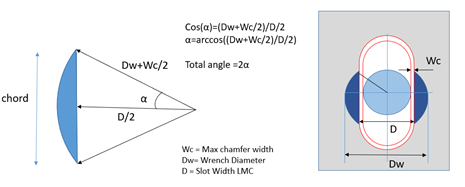
支持面積 (A) = (Dw/2)2 x (2 x α - sin (2 x α)) + 追加する実面積
= 0.078961 x (2 x 0.04209 - 0.7458) + 0.0170
= 0.024580 inch2
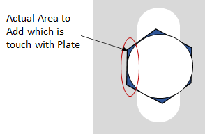
注記:
このルールは、DFMPro 設定に基づき、トップレベルのアセンブリ パーツで実行できます。
チェックを正常に実行するためには、アセンブリ内のボルト、ワッシャ、ナットを識別するために、ハードウェア名およびハードウェア種別の情報を必ず入力する必要があります。
ハードウェアを構成するには、ハードウェア データベースを参照してください。